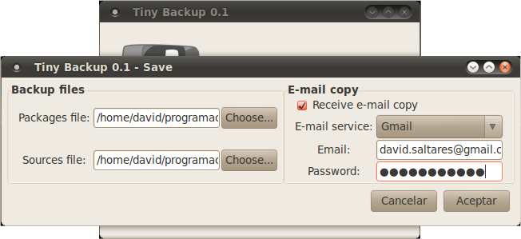
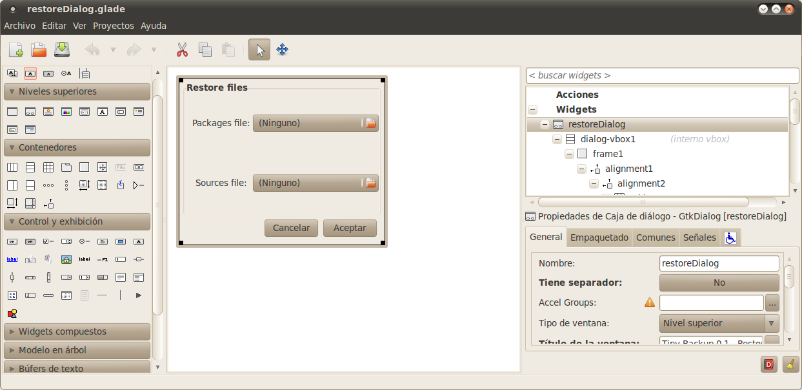
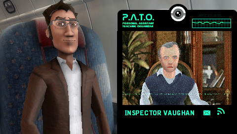

Aug 14, 2010 · 3 minute read · Comments
Hobbies
 Escucho podcasts desde hace bastante por lo que necesito un sistema de suscripción que pueda utilizar para descargar los últimos episodios automáticamente y sincronizarlos con mi iPod de manera sencilla. Por supuesto, los problemas se acaban para los usuarios de Windows y Mac utilizando iTunes (mientras que puedan soportarlo), no obstante los usuarios de GNU/Linux lo tienen más complicado. En mi Ubuntu probé varias alternativas como GtkPod, Rythmbox e incluso Amarok aunque ninguna me convenció. Fue entonces cuando descubrí un cliente de podcast liberado bajo GPL v3 llamado gPodder.
Escucho podcasts desde hace bastante por lo que necesito un sistema de suscripción que pueda utilizar para descargar los últimos episodios automáticamente y sincronizarlos con mi iPod de manera sencilla. Por supuesto, los problemas se acaban para los usuarios de Windows y Mac utilizando iTunes (mientras que puedan soportarlo), no obstante los usuarios de GNU/Linux lo tienen más complicado. En mi Ubuntu probé varias alternativas como GtkPod, Rythmbox e incluso Amarok aunque ninguna me convenció. Fue entonces cuando descubrí un cliente de podcast liberado bajo GPL v3 llamado gPodder.
gpodder permite suscribirnos a cualquier podcast mediante su feed, momento en el cual pasará a nuestra lista. Desde la lista podemos ver, descargar o escuchar los episodios ordenados de forma cronológicamente inversa. De manera bastante inteligente nos gestiona los episodios que hemos escuchado y los pendientes así como los que hemos transferido ya a nuestro dispositivo de audio. Como ya he mencionado, podemos sincronizar episodios con nuestro iPod de una manera rápida, incluso respetando el Cover Flow (característica deseable que no todos los clientes consiguen).
Desde el panel de opciones podemos personalizar casi cualquier aspecto. Desde la frecuencia de actualización de episodios como el deseo de colocarlos en la lista de descargas de forma automática o el momento en el que queremos borrar episodios antiguos. Gpodder, además, nos ayuda a gestionar varios dispositivos externos a la vez, ya tengan las pijadas de un iPod en cuanto a sistema de ficheros o sean reproductores MP3 comunes.

Quizás el aspecto que distingue a gPodder de otros clientes es su portal online. Si nos registramos accederemos a una especie de red social y directorio de podcasts combinados. Aparecen referencias a cientos de podcasts clasificados por temática, todos junto con la valoración de sus suscriptores. Podemos gestionar los equipos en los que tenemos instalado gPodder y elegir a qué podcasts estará suscrito cada uno. Tenemos dos opciones, compartir nuestra lista para que otros usuarios vean nuestras recomendaciones o mantener nuestra privacidad. Hay que reconocer que la navegación no es todo lo cómoda que debiera y se echan de menos algunos elementos adicionales pero el servicio que ofrece es más que aceptable. Por último, señalar que podemos sincronizar en todo momento el cliente de escritorio con nuestra cuenta online para añadir suscripciones nuevas.

Siempre es deseable descargar los episodios a nuestro reproductor multimeda de manera directa aunque esto sólo podemos hacerlo si tenemos una tarifa de datos. Quizás otro día hable del cliente de podcasts que utilizo en mi móvil Android, eso ya es otra historia. Si lo que queremos es una aplicación de escritorio sencilla pero potente, gPodder es una excelente opción. No sólo es libre sino que es multiplataforma (Windows, GNU/Linux, Mac, Maemo y FreeBSD).
Aug 12, 2010 · 4 minute read · Comments
Hobbies

Inception es el largometraje que puede consagrar a Christopher Nolan como guionista y director de culto. Tras obras como “The Prestige”, “Memento” o “The Dark Knight” nos trae un viaje de ciencia ficción muy complicado de describir. Poco o nada sabía de esta película hasta que se produjo el sensacionalista despliegue mediático de los últimos días. Apariciones en televisión, tercer puesto en IMDB (los rankings siempre son polémicos) e incluso la he visto retratada como “la mejor película de todos los tiempos” en algún blog. Desde luego fue ventajoso acudir a la sala con expectativas moderadas pues pocas posibilidades existían entonces de decepción.
Origen en su traducción al español, nos traslada a un mundo en el que es posible compartir y manipular sueños ajenos. El espionaje industrial alcanza una nueva dimensión donde que grandes corporaciones contratan a ladrones que actúan en los sueños (más conocidos como extractores) para arrebatarle información a la competencia. En este contexto se encuentra Cobb (Leonardo Di Caprio), uno de los mejores extractores que busca la redención para recuperar a su familia de forma desesperada. Para conseguirlo debe arrastrar a un equipo e iniciar una operación al más puro estilo “Ocean’s Eleven” en el confuso mundo de los sueños.
Estoy completamente de acuerdo en que Inception ha bebido de otras muchas obras siendo la más evidente “The Matrix” con su visión especial del “Mito de la Caverna” de Platón. De hecho sería una película mediocre si se quedara en ese punto, por suerte, la obra que nos ocupa esgrime más de una razón para ir más allá. Una de sus virtudes es que demuestra que el cine comercial no tiene por qué ser burdo ni estar vacío (que no es decir poco), tiene sustancia y a la vez está hecha para gustar a un público amplio, veamos los motivos.

Uno de los pilares básicos de Inception es el entrelazado de sueños y la incertidumbre de no distinguir la realidad de la fantasía. Llevar realidades y líneas argumentales paralelas en una misma película es muy complicado y Christopher Nolan sale bien parado de su atrevimiento. Como no podía ser de otra forma se toman varias licencias en el plano de lo estrictamente coherente y científico pero son comprensibles y si, el espectador viene dispuesto, se aceptan sin más. Cabe destacar la espectacular y onírica forma en la que nos introducen en el mundo de la manipulación de sueños, infinitas posibilidades, leyes de la física que podemos romper y todo por construir.
A las realidades difusas y a la reflexión sobre el subconsciente hay que sumarle una puesta en escena admirable. La secuencias de acción y los efectos especiales abundan sin llegar al hiperbolismo de otras producciones. En cambio, es la dosis suficiente como para mantener un ritmo trepidante y no aburrir a los menos acostumbrados a películas pausadas. Ha sido de especial agrado ver persecuciones que no estén protagonizadas por explosiones nucleares, cámaras lentas o movimientos espasmódicos de la cámara.
No he mencionado aún el componente dramático centrado en el intento de Cobb por recuperar a su familia perdida. Hay que reconocer que al principio nos es completamente indiferente aunque la implicación del espectador en este aspecto va “in crescendo”. De esta manera se consigue la tensión que antes mencionaba. Esperaba más de la banda sonora, ya que tenía detrás a un gran compositor de acompañamientos para cine y videojuegos, Hans Zimmer. En cualquier caso no desentona para nada, simplemente pasa desapercibida.
Una película sobresaliente, la mejor en lo que va de año sobre todo porque me ha pillado por sorpresa. No me atrevo a decir más por no caer en la banalidad de perder las distancias y dejarme llevar por el entusiasmo del momento como ha ocurrido en otras reseñas. Si a estas alturas no te he convencido es que me expreso o escribo peor de lo que creía. No puedo sino recomendar su visionado en un buen cine.
Aug 11, 2010 · 4 minute read · Comments
Hobbies

Según Amanita Design su último título, Machinarium, sólo había sido adquirido de forma lícita por entre el 5% y el 15% de los que lo habían jugado. En lugar de ponerse a llorar por los rincones han decidido declarar la “amnistía” a los piratas dándoles una segunda oportunidad y dejando el juego a 5 dólares, es decir, algo menos de 4€. La crítica alabó a este producto indie tras su lanzamiento en octubre de 2009 así que, ni corto ni perezoso, lo compré y he estado jugándolo durante los últimos días.

La belleza de lo artesanal
Machinarium es una aventura gráfica de lo más sencilla desarrollada en flash en la que controlamos a un pequeño robot que es arrojado a un vertedero. Nuestro objetivo es infiltrarnos en una misteriosa ciudad de máquinas para rescatar a nuestra amada ya que ha sido secuestrada. Como podéis comprobar por las capturas lo que más destaca en Machinarium es su diseño artístico. Glorioso trabajo al impregnar absolutamente todos los elementos que lo componen con un look de dibujado a mano.
Todo es irregular pero a la vez armonioso en Machinarium, desde los robots, pasando por los edificios, los fondos o cualquier objeto. Los detalles de calidad están por todas partes: animaciones, rincones de escenarios, colores etc. Machinarium es un juego que enternece desde el primer momento y nos desplaza a un mundo triste y lleno de vida al mismo tiempo. Las similitudes con la magnífica producción de Pixar, Wall-E, son más que evidentes y van más allá de la ambientación. No hay ningún tipo de diálogo en todo el desarrollo, no obstante, la comunicación con el jugador es constante a través de los gestos y la música.

Ejercitando las neuronas
La ciudad máquina nos pondrá a prueba a través de decenas de puzzles en los que se combinan elementos clásicos de los point & click (como mezcla y uso de objetos) con rompecabezas, laberintos y otros enrevesados elementos. No soy ningún experto en aventuras gráficas, siempre he disfrutado de clásicos como Monkey Island o Day of the Tentacle pero poco más y quizás mis impresiones con respecto a la dificultad de los puzzles sean erróneas. Lo cierto es que me he visto obligado a rebanarme los sesos para llegar al ansiado final de la aventura.
No sólo algunas soluciones entrañan una dificultad considerable sino que es posible toparse con callejones sin salida, situación que no he visto en ninguna otra aventura. Esto nos obligará a andar con pies de plomo y guardar nuestros avances muy a menudo. Si tuviera que achacarle algo a su mecánica es la necesidad de depositar los ítems en el inventario manualmente en lugar de utilizar el botón derecho del ratón para descartarlos. Esto se debe al uso de flash como plataforma aunque tampoco es algo que afecte demasiado.

Una gran iniciativa
Amanita Design ha demostrado saber tratar a los usuarios con la iniciativa “Aministía a los piratas”. Cuando las grandes distribuidoras no hacen más que tratar de poner trabas a las copias ilegales de forma infructuosa mientras que descuidan y maltratan al jugador lícito, un pequeño estudio checo da un fuerte golpe en la mesa rebajando su trabajo a un precio muy atractivo. No sólo eso, sino que nos ofrecen las versiones Windows, GNU/Linux y Mac junto con la banda sonora completa del juego en MP3, todo sin DRM.
Los éxitos de estas acciones como esta o la que tuvo lugar hace unos meses con el Humble Indie Bundle (5 juegos indie al precio que el usuario decida) dejan claro que la solución no pasa por establecer validaciones absurdas en los juegos. Aunque también es cierto que grandes producciones conllevan más riesgo por lo que se dan patadas desesperadamente para bajar los índices de piratería.

Compra obligada
Cuando fue lanzado se puso a la venta por 20 dólares, precio que estimo un poco alto para los costes y valores de producción del proyecto. En cualquier caso, el hecho de haber descendido hasta los 5 dólares lo convierte en un imprescindible, así de claro. Máxime cuando lo hacen compatible con los 3 sistemas operativos mayoritarios (aunque sea a través de Flash).
Machinarium es una delicia que se disfruta cada segundo.
Aug 10, 2010 · 3 minute read · Comments
Projects

Si quieres conocer una biblioteca o un lenguaje nuevos lo mejor es, sin lugar a dudas, utilizarlos. Había mirado ya algunas cosas sobre Python pero hace algunos meses sentí la necesidad de programar algo pequeño para adquirir un mínimo de destreza. Había oído maravillas de lo sencillo y elegante que era diseñar la interfaz de una aplicación de escritorio con Glade y manejarla con PyGTK desde Python. Por tanto me puse manos a la obra y desarrollé Tiny Backup en un par de días.

Tiny Backup y su funcionamiento
Tiny Backup es una sencilla utilidad dirigida a usuarios de sistemas Debian para guardar un listado de todos los paquetes que tengan instalados y poder restaurarlos en caso de reinstalación del Sistema Operativo. Incluso es capaz de protegernos del un fallo grave en el disco duro ya que puede enviar dicho listado por correo electrónico (por el momento es compatible con Gmail, Hotmail y Yahoo).
Está diseñado siguiendo las directrices del patrón “Arquitectura en tres capas” aunque la capa de datos no ha sido necesaria en este caso. Ha sido un ejercicio muy interesante y, sin tener en cuenta el envío por e-mail, simplemente utiliza varios comandos básicos de GNU/Linux:
# Guardar listado de paquetes
dpkg --get-selections | grep -v deinstall > paquetes_backup
#Guardar listado de repositorios
cp /etc/apt/sources.list repositorios_backup
# Restaurar listado de repositorios
mv repositorios_backup /etc/apt/sources.list
gksudo apt-get update
# Restaurar paquetes
dpkg --set-selections < paquetes_backup
Por supuesto, es posible configurar los ficheros destino mediante el asistente de backup y restauración. Tiny Backup es libre bajo licencia GPL v3 y podéis obtenerlo a través de la forja en Google Code.

Glade, un gran editor de interfaces
Glade es una herramienta con licencia GPL que nos permite diseñar interfaces para aplicaciones de escritorio y guardarlas en formato XML. Posteriormente, esos ficheros pueden ser cargados mediante la clase GtkBuilder perteneciente a la API de GTK. Lo que significa que es compatible con cualquier lenguaje que posea un port de GTK entre los que, por supuesto, se encuentra Python (con PyGTK).
La filosofía de Glade consiste en separar por completo la interfaz del código de manera que podemos editarla sin necesidad de recompilaciones. Esto difiere bastante de los clásicos IDE que generan código automáticamente (muchas veces sucio y poco elegante) para manejar la vista. Como inconveniente tenemos un aumento de tiempo en el inicio de la aplicación, no obstante, es leve y no se aprecia en exceso. Existen muchas aplicaciones open source que han hecho uso de Glade, sin ir más lejos, el reproductor de música Exaile es una de ellas.
Entre las bondades de Glade también se encuentra la capacidad para decidir la redistribución de los componentes al redimensionar los formularios, algo muy de agradecer. Es posible que tratar de abarcar el software de buenas a primeras puede ser duro pero siguiendo un buen tutorial en un par de días de puede estar utilizando sin problemas.
Aug 8, 2010 · 3 minute read · Comments
Hobbies
El término “juego educativo” está lleno de connotaciones negativas, parece que necesariamente ha de ser un tostón impresionante jugarlo. Hace cierto tiempo me recomendaron escuchar una serie de conferencias pertenecientes al I Congreso Internacional de Videojuegos en la Universidad Complutense de Madrid publicadas en el feed de Arsgames. En uno de los archivos sonoros encontré una exposición de Juancho Carrillo, Project Manager en Tonika Games (pequeño estudio español), sobre juegos educativos. Allí fue donde descubrí Play English.
Diversión mayor que aprendizaje
Juancho explicaba que para hacer un videojuego educativo había que tener un concepto muy presente. La diversión debe superar al aprendizaje, en caso contrario el producto deja de ser un juego para convertirse en software educativo sin más. No soy un experto en videojuegos educativos, no obstante Play English es lo más cercano a ese concepto que he visto.
Podéis escuchar la conferencia completa aquí:

Investigando un robo
Play English es una suerte de aventura gráfica para PSP en la que nos metemos en el pellejo de Jaime Rubio (James Blond), un detective de una agencia privada que recibe la misión de investigar un robo en la National Gallery. Jaime Rubio es un grandioso detective pero tiene un pequeño defecto, mintió en su currículum sobre su nivel de inglés… ¡no tiene ni idea y le va a caer una buena! Deberás conducirlo por su investigación conversando con decenas de personajes y tratando de salir airoso de situaciones de peligro.
Las mecánicas
La variedad de situaciones no es su punto más fuerte, no obstante cuenta con suficientes como para no caer en la monotonía. Tendremos que interrogar a otros personajes, resolver puzles y seguir indicaciones mediante voz. Algunos ejemplos que se me ocurren son: tener que conducir siguiendo las instrucciones sonoras de un GPS, desactivar una bomba escuchando qué colores cortar etc. En cualquier caso, la mayoría del tiempo estaremos conversando y tratando de formular frases correctas. En media hora de juego habremos practicado más inglés del que creemos.

Distrayendo al alumno
El humor es muy importante en Play English, aprender debe ser divertido y en esta ocasión lo es. Las conversaciones están llenas de guiños, referencias y sutilezas que nos harán esbozar una sonrisa en más de una ocasión. Constantemente habrá toques de humor en las respuestas incorrectas, cuidadosamente escogidas pensando en los fallos que suelen cometer los españoles al aprender inglés. El simple hecho de que James Rubio haya mentido en su CV es un buen ejemplo.
El discurso de Juancho Carrillo se demuestra en Play English, es un juego sin grandiosas pretensiones. No quiere ser el próximo Chains of Olympus pero hace un gran trabajo dentro de su categoría. Uniendo el humor con un guión interesante consigue que un niño no perciba estar aprendiendo. Logro, digno de admiración.
Por supuesto, el título está principalmente dirigido a niños aunque existen dos niveles de dificultad que incidirán notablemente en la jugabilidad. La velocidad de las frases aumenta así como su contenido. Sin duda, un buen trabajo a la hora de ofrecer cierta adaptabilidad a los conocimientos del usuario.
Resumiendo
Play English es un producto de un pequeño estudio español con un objetivo muy claro, conseguir que practicar inglés sea divertido y no podemos negar que lo haya conseguido. Sabiendo que en otros aspectos resulta limitado (sobre todo en cuanto a tecnología se refiere) resulta una opción muy interesante para los niños de la casa. Desde luego, todo un caso de estudio para aprender sobre juegos educativos.